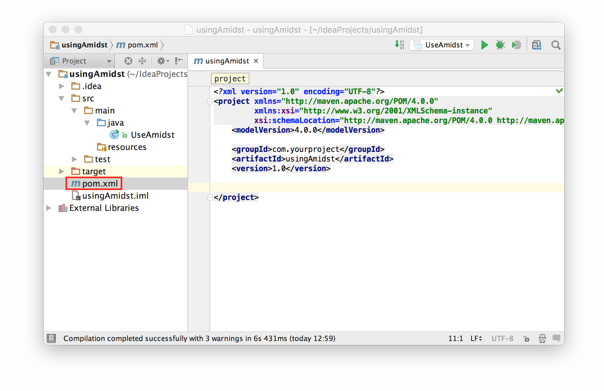
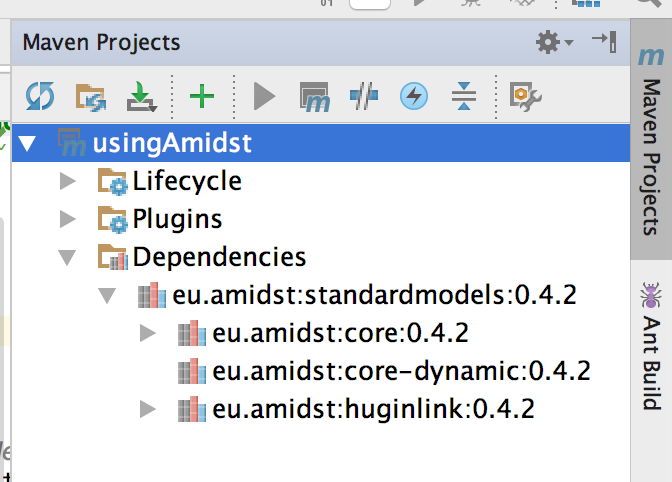
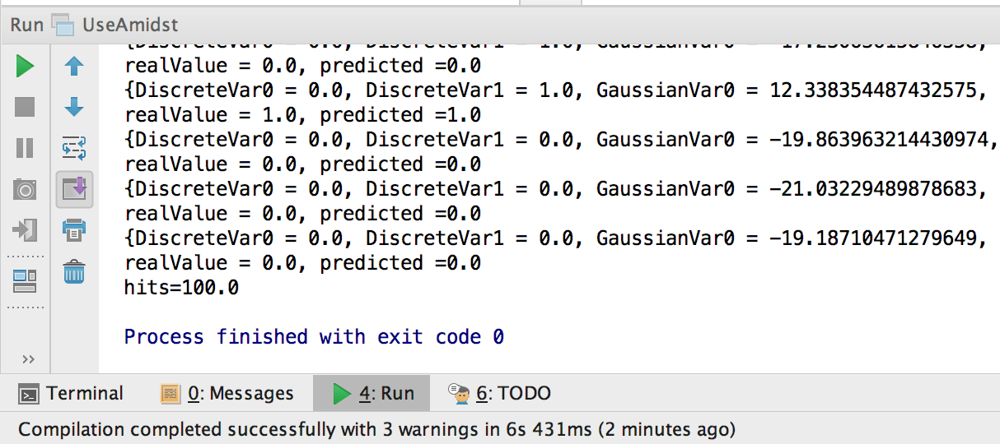

Loading AMIDST dependencies from a remote maven repository
Here we explain how to add the AMIDST
dependencies in a maven project with Java 8 or higher. You can check
this link
for getting more information about how to create a new mavenproject. In
this example, we will use a project containing only one class,
though the procedure here explain could be used in any other maven
project.
For using the AMIDST Toolbox, the pom.xlm file will be modified. First, in the Project view (located on the left) select the file pom.xml of your project and open it:

Add the AMIDST repository by including
the following code to your pom:
<repositories>
<!-- AMIDST repository in github -->
<repository>
<id>amidstRepo</id> <!-- local identifier, it can be anything -->
<url>https://raw.github.com/amidst/toolbox/mvn-repo/</url>
</repository>
<!-- ... -->
</repositories>
Then, add the dependencies to the
modules in AMIDST you want to use. For each module, add an
element <dependency>...</dependency>
inside the labels <dependencies></dependencies>.
For each one, we have to indicate the following information:
For example, for using the core-dynamic module, include the following code:
Note that for using another module, simply change the value of the element artifactId (i.e. the content between the tags <artifactId> and <artifactId>).
- groupId is an identifier of the project's module. In this case it should containt the value "eu.amidst".
- artifactId is the name of the module we want to use. More precisely, it is the name of the jar file containing such module. You can see the list of AMIDST modules here.
- version is the identifier of AMIDST Toolbox release. You can see here the list of all versions available.
- scope allows you to only include dependencies appropriate for the current stage of the build. We will set this to "compile".
For example, for using the core-dynamic module, include the following code:
<dependencies>
<!-- Load any of the modules from AMIDST Toolbox -->
<dependency>
<groupId>eu.amidst</groupId>
<artifactId>core-dynamic</artifactId>
<version>0.4.2</version>
<scope>compile</scope>
</dependency>
<!-- ... -->
</dependencies>
Note that for using another module, simply change the value of the element artifactId (i.e. the content between the tags <artifactId> and <artifactId>).
Now you can check in the Maven
Projects panel that all the dependencies have been loaded:

Note that the core-dynamic module depends
on core that
has been loaded as well. We recomend you to download the sources and
the javadoc:

Finally, for testing purposes, we can
run the following code:
If everything goes right, the following output will be generated:
import eu.amidst.dynamic.models.DynamicBayesianNetwork;
import eu.amidst.dynamic.utils.DynamicBayesianNetworkGenerator;
public class TestingAmidst { public static void main(String[] args) throws WrongConfigurationException { DynamicBayesianNetworkGenerator.setNumberOfContinuousVars(2);
DynamicBayesianNetworkGenerator.setNumberOfDiscreteVars(5);
DynamicBayesianNetworkGenerator.setNumberOfStates(3);
DynamicBayesianNetwork extendedDBN =
DynamicBayesianNetworkGenerator.generateDynamicBayesianNetwork();
System.out.println(extendedDBN.toString());
} }
If everything goes right, the following output will be generated:
